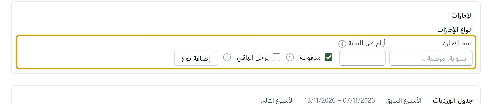

الإجازات
- في الموظفون والرواتب تحت الإجازات أضف أنواع الإجازات: اسم الإجازة، وأيام في السنة، ومدفوعة أو لا، ويُرحَّل الباقي إن كان ما لم يُؤخذ يُضاف إلى السنة التالية. الأيام تكتبها أنت من عقودك وقانون العمل؛ البرنامج لا يفرض عدداً. اترك أيام في السنة فارغة لإجازة بلا حد سنوي، مثل الإجازة بلا راتب.


- اختر الموظف ونوع الإجازة ومن وإلى واضغط تسجيل طلب إجازة. الأيام تُعدّ متصلة من أول يوم إلى آخره. لا يُقبل طلب يتداخل مع إجازة أخرى للموظف، ولا طلب أكبر من رصيده (والطلبات المعلّقة تُحسب منه).
- الطلب يبقى معلّقة حتى يضغط مدير الموارد البشرية أو المالك موافقة، أو رفض مع سبب في ملاحظة. الموافقة تجعل أيامها إجازة في الحضور.
- الرصيد: جدول رصيد الإجازات يحسبه البرنامج كل مرة ولا يخزّنه: أيام السنة (وفي سنة البدء بنسبة ما بقي منها بعد تاريخ البدء)، والباقي من السنة الماضية إن كان النوع يُرحَّل، ناقص الإجازات الموافق عليها. فإن عدّلت أيام نوع تغيّر الرصيد فوراً.
- الإجازة بلا راتب تُحسم من راتب شهرها مثل الغياب (الراتب/30 لكل يوم)، وتظهر في كشف الرواتب بجانب الغياب «+ 3 بلا راتب». الإجازة المدفوعة لا تُحسم. إن كانت رواتب الشهر مصروفة لا تُقبل الموافقة على إجازة بلا راتب فيه ولا إلغاؤها: ألغِ رواتب الشهر ثم أعد صرفها.
- إلغاء إجازة: اكتب السبب واضغط إلغاء: تعود أيامها إلى الرصيد ويُمسح ما وضعته في الحضور، إلا يوماً سجّلته بيدك بعدها (مثل يوم عاد فيه الموظف إلى العمل).
على الجوال: الإجازات من مجموعة الإدارة، بالأسماء نفسها: اضغط الطلب لـموافقة أو رفض أو إلغاء الإجازة، واضغط نوع الإجازة لتعديله.
يطلب الموظف إجازته بنفسه: أضف له مستخدماً في المستخدمون، ثم في تعديل الموظف اختر مستخدم الموظف. حين يدخل الجوال بهذا المستخدم يرى الإجازات حتى لو لم يكن دوره الموارد البشرية: رصيده، وطلب إجازة، وطلباته، وسحب الطلب لطلب لم يُبتّ فيه بعد. لا يرى إجازات غيره ولا يوافق على طلبه. وعلى الكمبيوتر يجدها في حسابي تحت إجازاتي: رصيده وطلب إجازة وطلباته.